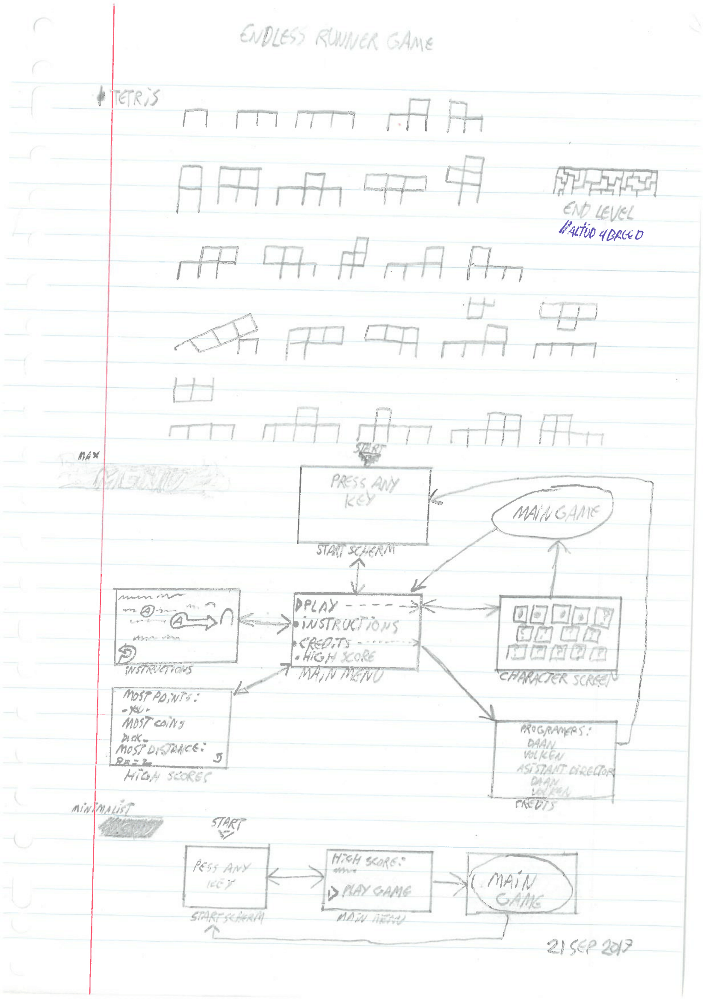
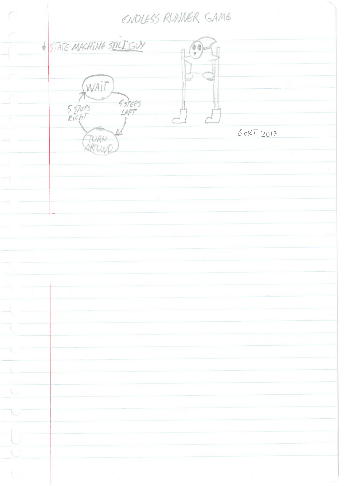

Functioneel ontwerp
Hieronder kunt u schetsen zien die ik gemaakt heb om game concepten uit te werken.
Als u op de knop onder de foto drukt kunt u meer schetsen en informatie hierover zien.
Labyrinth puzzle adventure game

Labyrinth puzzle adventure game
Dit is een concept voor een 3D puzzle/adventure game ala de Zelda
games.
Hierin is het scenario dat de speler dit labyrinth binnen gaat om de
eindbaas te verslaan.
De layout staat vast maar de logica daarvan is niet meteen duidelijk.
Eerst kan de speler gewoon naar binnen lopen, maar op een gegeven moment
als de speler terug probeerd te gaan merk hij dat dat niet meer kan.
Vanaf dat punt moet de spelers puzzles in de induviduele kamers
oplossen.
Als de puzzle opgelost is of interactie mee is gehad dan veranderd dat
welke kames er aan de vier uitgangen gelinkt zijn.
In het einde heeft de speler alles kamers verkent en is de eindbaas
ontwaken. nu vallen alle muren weg en moet de speler
alle eerder gebruikte puzzels gebruiken om de baas te verslaan.
Pinball physics puzzle game
Pinball physics puzzle game
Dit is een concept voor een topdown physics puzzle/actie game.
deze game zal waarschijnlijk goed geschickt zijn voor het mobiele platform.
Ook kan de game heel andere doelgroepen aanspreken afhankelijk van de art
stijl en of de game turnbased zou zijn.
Momenteel heb ik bedacht dat er drie soorten enemies zijn:
Small gunner, deze zijn te doden door tegen ze aan te lanceren.
Big gunner, deze zijn niet te doden maar kunnen wel verschoven worden als
je tegen ze aan lanceerd.
Turret gunner, bij deze gebeurt er niks als je tegen ze aan
lanceerd.
verder had ik nog bedacht dat je bouncers op muren kan hebben die de speler
met meer geweld afkaatst.
En ook bijvoorbeeld nog dat de speler eerst één of meer sleutels moet
verzamelen om naar het einde van het level te kunnen gaan.
2D puzzle platformer
2D puzzle platformer
Deze schetsen had ik oorspronkelijk voor een van mijn projecten gemaakt.
Maar dat project was in concept al zo erg veranderd tegen de tijd dat wij daarmee
gestart waren.
Dat dit nu praktisch een ander concept op zichzelf is.
Desalnietemin zou ik toch een keer opnieuw een 3d puzzle platformer willen
maken.
Zie hieronder de rest van de schetsen.
Endless runner crossover game

Endless runner crossover game
Zoals de titel al zecht is dit een concept voor een endless runner waaring je iederekeer door thema's van verschillende games heen rent. Als je dan in zo een gebied zit zijn de platformen en enemies die je tegenkomt verschillend. De voorbeelden die ik hiervoor geschetst heb zijn: Tetris, Yoshi's island en portal.  
Website game transformation
Website game transformation
Dit is een concept voor als je op een website op een knop zou drukken en dat alle dives veranderen in rooms van leves. End dat je daar dan doorheen kon verkennen met karakters van populaire nes games. Elk karakter zou dan een eigen verschillende moves hebben waarvan sommige overlappen met die van anderen. Hierdoor zou je dan specifieke obstakels altijd kunnen overkomen met een handvol karakers.
Health & Gun dual purpose mechanic
Health & Gun dual purpose mechanic
Als je schade krijgt dan heeft dat effect op welk wapen je kan gebruiken.
Die wapens kunnen dan kogels afvuren in verschillende behaviours.
Daardoor kan je situaties krijgen waarin je liever expres schade op wil lopen om een
beter waper te hebben voor dat moment.
Deze mechanic wil ik gebruiken voor een tank achtige game.

Projecten
Hieronder staan mechanics en projecten die ik onlangs gemaakt heb om te begrijpen hoe ik ze maken moet.
Hexagon Grid
Hexagon Grid
Dit project was om te kijken hoe ik zeshoeken in een grid kon
doen.
Om de zeshoek vorm te krijgen heb ik ook opgezocht hoe je poligonale
models kan scripten.
Vervolgens heb ik daar prefabs van gemaakt en het in een grid script gezet. Toen heb ik een tile reactie gedaan bij een mouse hover. En een material met kleur randomizer bij klikken erop gezet.
Hieronder nog een schets die ik gemaakt heb bij het bedenken van de code.
Hoelang aan gewerkt:
2 weken
Wat gedaan:
design, programmeren
Super Mario gamedesign twist
Super Mario gamedesign twist
Voor dit project heb ik een analyse van de game
Super Mario Bros. gemaakt.
Vervolgens wou ik hier een twist aan geven om de GameFeel te
veranderen.
Zoals u in de bovenstaande foto's kunt zien heb ik een simpel prototype
gemaakt waaring de basic controls van mario gebruikbaar zijn.
Als twist heb ik er nu voor gekozen om het scherm steeds donkerder te
laten worden totdat de speler een coin verzameld.
Hierdoor word de focus op het verzamelen van de coins vergroot.
De speler kan het spel winnen of doodgaan door op de rode balk te
landen. Dus de game is haalbaar en kan opnieuw gespeeld worden zonder
abrupt vast te lopen.
Hoelang aan gewerkt:
2 weken
Wat gedaan:
design, programmeren
Inventory system
Inventory system
In dit project heb ik geprobeerd een inventory system te maken.
Het idee was dat je dingen van de vloer kon oppakken en dat die dan een
willekeurig item uit een list zouden zijn.

Dit project is nog niet helemaal af en ik ben van plan deze later werkend te maken. Dan kan het toepassen in een game project die ik in gedachten heb.
Hieronder staat nog een schets van het originele idee wat ik in gedachten had.
Hoelang aan gewerkt:
2 weken
Wat gedaan:
design, programmeren
Onderstaande projecten zijn groeps opdrachten voor mijn opleiding geweest.
Met deze projecten ben ik de groepsleider geweest en heb ik zelf ook wat geprogrammeerd.
GameSlice: The binding of Isaac
GameSlice: The binding of Isaac
Dit project is een game slice. Dat betekend dat mijn team tien seconden
beeld materiaal
hebben nagemaakt van een game die al bestaat.
Voor dit project heb ik met 2 andere programmeurs en 3 artists
samengewerkt.

In deze game slice moet de speler de vijanden verslaan door op ze te
schieten tot ze dood gaan,
De speler heeft zelf 3 hartjes aan leven. Als de speler geraakt wordt
door een vijand dan verliest hij een half hartje per keer.
Als de speler alle vijanden kan doden voordat hij zelf dood gaat dan
heeft hij het spel gewonnen.
Notitie: de code op github laat alleen mijn deel van de scripten zien.
Hoelang aan gewerkt:
4 weken
Wat gedaan:
team leider, programmeren
Ma100 Augmented Reality app
Ma100 Augmented Reality app
In verband met het 100 jarig jubileum van het Mediacollege Amsterdam;
werden ik en een paar andere leerlingen gevraagd of wij een app met
Augmented reality wouden maken.
Deze app moest dan complimentair zijn aan het boek over het 100
jarig bestaan dat de school toen weggaf aan bezoekers.


Als je de camera van je telefoon boven een specifieke afbeelding houdt
dan krijg je een carousel van 3D objecten te zien.
Je kan ook nog de telefoon ietswat om de afbeelding heen draaien of het
carousel uit een andere hoeken te kunnen zien.
Veeg met je vinger over het scherm om het carousel rond te laten
draaien.
Als je vervolgens op een van de 3D modellen klikt wordt deze naar de
voorgrond gehaalt en wordt er wat tekst bij gezet over de geschiedenis
van het project.
Ook kan je dat 3D model nu om zijn as heen draaien om het te
inspecteren. Druk op de terug knop om het carousel weer te laten
verschijnen.
Hoelang aan gewerkt:
6 weken
Wat gedaan:
team leider, designer
Mythe van de Pukwudgie

Mythe van de Pukwudgie
Deze team opdracht stond onder de naam Mythe.
Dit is een spel dat over de Pukwudgies gaat, mythische wezens uit
indianen
legendes.
Ook aan deze game heb ik gewerkt met twee andere programmeurs en drie
game
artists
In dit project heb ik de gameplay en level design uitgedacht.
Al is het uiteindelijke level en de opmaak door een artist inelkaar
gezet.
Hieronder staan de vergelijkingen tussen de ontwikkelings build en de final build.


Het idee was dat je als een indianen meisje je weg terug naar huis moet
vinden nadat de pukwudgies je ontvoerd hadden.
Vervolgens moest je dan allemaal korte levels met puzzels erin halen om
voortgang te boeken.
Hieronder nog de uiteindelijke schetsen en een uitgewerkte mechanic.
Ik heb in dit project aan de player movement, jumping en grab/throw
scripts
gewerkt.
Verder heb ik ook aan de button, gate en bouncer scripts gewerkt.
Daarnaast heb ik het project gemanaged en de taken verdeeld.
Hoelang aan gewerkt:
8 weken
Wat gedaan:
team leider, designer, programmeren
Profiel
Over mij.
ik ben geboren op 13 September 1999 en woon in Uithoorn. Ik volg momenteel een opleiding voor Game Developer op het Mediacollege Amsterdam.
Games heb ik al gespeeld zolang als ik mij kan herrineren. Ik ben gefacineerd door dit medium en wil altijd meer leren over hoe games in elkaar zitten. verder vind ik het ook leuk om te tekenen en om eigen draaien aan concepten te geven.
Mijn Doel!
Mijn skills
Met programmeren werk ik in Unity.
Wat wil ik leren
Voor dit stadium in mijn opleiding wil ik graag meer leren over hoe game design en prototyping er aan toe gaan bij game bedrijven zelf. En hoe ik mijn kennis daarover verbreden kan.
Curriculum Vitae